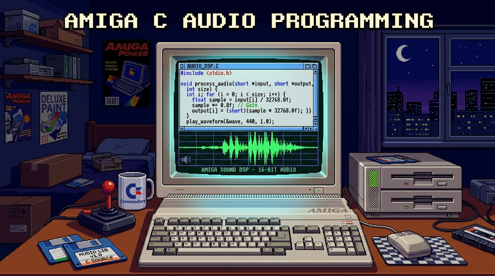

Interactive Sound in C
So far, we’ve explored custom chip hardware programming in assembly. Now let’s look at how to play audio using AmigaOS operating system APIs in C! In this tutorial, we’ll write an OS-friendly C application using datatypes.library to load sound samples dynamically, create an Intuition window with interactive UI buttons, and trigger audio playback on mouse clicks.
The Concept: OS V39 DataTypes & Audio
AmigaOS 3.0 (V39) introduced the DataTypes system, a powerful object-oriented framework that allows applications to load, display, and play media files (images, sounds, text) without needing custom file parsers. By creating a sound datatype object with NewDTObject(), your program can play IFF 8SVX audio files using high-level OS calls (DTM_PLAY).

Click diagram to expand / view full sizePreparing Your Sound Sample
AmigaOS DataTypes expects sound files in the native 8SVX (8-bit Sampled Voice) IFF audio format:
- Find a Sample: Find a short sound effect (
.wavor.aiffformat is ideal). - Convert in Audacity: Open the file in Audacity:
- Set the project sample rate (bottom left) to 8363 Hz or 11025 Hz.
- Select
File > Export > Export Audio. - Choose Other uncompressed files as format.
- Under Header, select SDS (Amiga 8SVX) or IFF 8SVX.
- Under Encoding, select Signed 8-bit PCM.
- Save File: Save the exported file as
sound.8svxin your project folder.
Interactive Audio Button in C
The Complete Code:
/*
* button_sound.c
* Interactive Audio Playback in C using AmigaOS 3.0+ DataTypes
*/
#include <proto/exec.h>
#include <proto/dos.h>
#include <proto/graphics.h>
#include <proto/intuition.h>
#include <proto/datatypes.h>
#include <datatypes/soundclass.h>
#include <stdio.h>
#include <stdlib.h>
#define WIN_WIDTH 320
#define WIN_HEIGHT 100
#define BUTTON_LEFT 50
#define BUTTON_TOP 30
#define BUTTON_RIGHT 270
#define BUTTON_BOTTOM 70
#define PEN_PRIMARY 1
#define PEN_SECONDARY 2
struct Library *DOSBase = NULL;
struct Library *GfxBase = NULL;
struct Library *IntuitionBase = NULL;
struct Library *DataTypesBase = NULL;
struct Window *win = NULL;
Object *sound_obj = NULL;
static void cleanup(int status) {
if (sound_obj) DisposeDTObject(sound_obj);
if (win) CloseWindow(win);
if (DataTypesBase) CloseLibrary(DataTypesBase);
if (DOSBase) CloseLibrary(DOSBase);
if (IntuitionBase) CloseLibrary(IntuitionBase);
if (GfxBase) CloseLibrary(GfxBase);
exit(status);
}
static void draw_button(int pressed) {
UWORD fill_pen = pressed ? PEN_SECONDARY : PEN_PRIMARY;
UWORD text_pen = pressed ? PEN_PRIMARY : PEN_SECONDARY;
if (!win || !win->RPort) return;
SetAPen(win->RPort, fill_pen);
RectFill(win->RPort, BUTTON_LEFT, BUTTON_TOP, BUTTON_RIGHT, BUTTON_BOTTOM);
SetAPen(win->RPort, text_pen);
Move(win->RPort, 110, 52);
Text(win->RPort, "Play Sound", 10);
}
int main(void) {
GfxBase = OpenLibrary("graphics.library", 39);
IntuitionBase = OpenLibrary("intuition.library", 39);
DOSBase = OpenLibrary("dos.library", 39);
DataTypesBase = OpenLibrary("datatypes.library", 39);
if (!GfxBase || !IntuitionBase || !DOSBase || !DataTypesBase) {
puts("Error: Requires AmigaOS 3.0+ (V39) libraries.");
cleanup(20);
}
sound_obj = NewDTObject("sound.8svx", DTA_SourceType, DTST_FILE, DTA_GroupID, GID_SOUND, TAG_END);
if (!sound_obj) {
puts("Error: Could not load sound.8svx from current directory.");
cleanup(20);
}
win = OpenWindowTags(NULL,
WA_Left, 20, WA_Top, 20, WA_Width, WIN_WIDTH, WA_Height, WIN_HEIGHT,
WA_Title, (ULONG)"C Sound Player",
WA_IDCMP, IDCMP_CLOSEWINDOW | IDCMP_MOUSEBUTTONS,
WA_Flags, WFLG_DRAGBAR | WFLG_DEPTHGADGET | WFLG_CLOSEGADGET | WFLG_ACTIVATE,
TAG_END);
if (!win) {
puts("Error: Could not open window.");
cleanup(20);
}
draw_button(0);
BOOL running = TRUE;
while (running) {
struct IntuiMessage *msg;
Wait(1L << win->UserPort->mp_SigBit);
while ((msg = (struct IntuiMessage *)GetMsg(win->UserPort))) {
ULONG msgClass = msg->Class;
UWORD msgCode = msg->Code;
WORD mouseX = msg->MouseX;
WORD mouseY = msg->MouseY;
ReplyMsg((struct Message *)msg);
if (msgClass == IDCMP_CLOSEWINDOW) {
running = FALSE;
} else if (msgClass == IDCMP_MOUSEBUTTONS) {
if (msgCode == SELECTDOWN) {
if (mouseX >= BUTTON_LEFT && mouseX <= BUTTON_RIGHT &&
mouseY >= BUTTON_TOP && mouseY <= BUTTON_BOTTOM) {
draw_button(1);
DoDTMethod(sound_obj, NULL, NULL, DTM_PLAY, NULL, SNDA_DEST_AUDION, 0, TAG_END);
}
} else if (msgCode == SELECTUP) {
draw_button(0);
}
}
}
}
cleanup(0);
return 0;
}
How to Compile and Run with vbcc (Terminal & Emulator)
- Save Source Code: Save the C source code into a file named
button_sound.c. - Prepare Audio Sample: Place your converted
sound.8svxfile in the same folder asbutton_sound.c. - Compile with vbcc: Open Terminal, navigate to your folder, and compile targeting AmigaOS 3.0+ (V39):
Note: Using
vc +os39 -o button_sound button_sound.c -lauto -lamiga+os39ensuresdatatypes.libraryheaders and AmigaOS 3.0+ system V39 structures are properly linked. - Run in Emulator: Mount the folder in FS-UAE or vAmiga configured with Kickstart 3.0 or 3.1. Boot Workbench, open Shell/CLI, type
button_sound, and press Enter. - See the Result: An Intuition window will open with a button. Click it to animate the button and play your sound through
datatypes.library!
Compiling with Docker (Dockerfile)
Using a Dockerfile is the cleanest approach for reproducible builds because it encapsulates all cross-compilation toolchains inside a container, requiring zero local toolchain setup.
Project Dockerfile
Download Dockerfile# Amiga 68k Cross-Development Docker Environment
FROM amigadev/crosstools:m68k-amigaos
WORKDIR /work
# Default command compiles C source file button_sound.c
CMD ["m68k-amigaos-gcc", "-O2", "button_sound.c", "-o", "button_sound", "-noixemul"]
How the Dockerfile Works:
FROM amigadev/crosstools:m68k-amigaos: Pulls a pre-configured Docker image containing the 68k AmigaOS GCC cross-compiler (m68k-amigaos-gcc), NDK headers (<proto/exec.h>,<proto/intuition.h>), and C runtime libraries.WORKDIR /work: Sets the container’s internal working directory to/work.CMD ["m68k-amigaos-gcc", ...]: Specifies the default build command executed when the container starts.
Project Folder Setup
Place the Dockerfile, your source code (button_sound.c), and audio file (sound.8svx) all in the same directory on your host machine (for example, in ~/code/amiga_sound or ~/Downloads/amiga_sound):
~/code/amiga_sound/
├── Dockerfile
├── button_sound.c
└── sound.8svx
Step 1: Build the Container Image
Open Terminal, navigate to your project folder (cd ~/code/amiga_sound), and build the container image:
docker build -t amiga-c-dev .
Step 2: Compile Your Code
Run the container to compile button_sound.c. The -v $(pwd):/work flag mounts your current host folder (e.g. ~/code/amiga_sound) into the container’s internal /work folder:
docker run --rm -v $(pwd):/work amiga-c-dev
When this command finishes, your compiled Amiga executable (button_sound) will appear directly in your host directory alongside button_sound.c!
Step 3: Test Execution with vamos (CLI Emulator)
You can test your compiled binary directly in Terminal without launching a GUI emulator using amitools (vamos):
docker run --rm -v $(pwd):/work -w /work sebastianbergmann/amitools:latest vamos button_sound
Creating an ADF Floppy Disk Image with send2adf
To test your compiled binary on hardware or in emulators as a bootable floppy disk image (.adf), you can package your executable and sound sample using the repository’s send2adf tool:
1. Packaging Files into an .adf Disk Image
Run send2adf in Terminal to build an 880 KiB Amiga disk file containing button_sound and sound.8svx:
send2adf -o disk.adf -N SoundDemo -B 1.3 button_sound sound.8svx
-o disk.adf: Output filename for the generated disk image.-N SoundDemo: Floppy disk volume label.-B 1.3: Installs a Kickstart bootblock.
2. Mounting and Testing in Emulators
Mount the resulting disk.adf image into Floppy Drive DF0: in your emulator (vAmiga or FS-UAE) to boot and test your program directly from floppy disk!